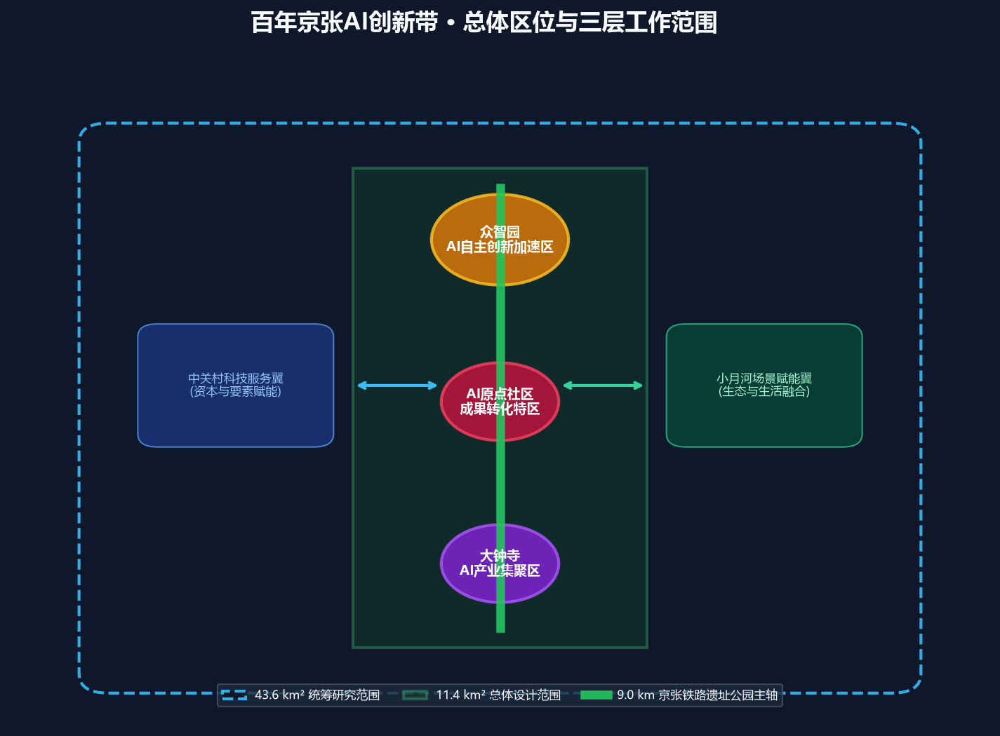
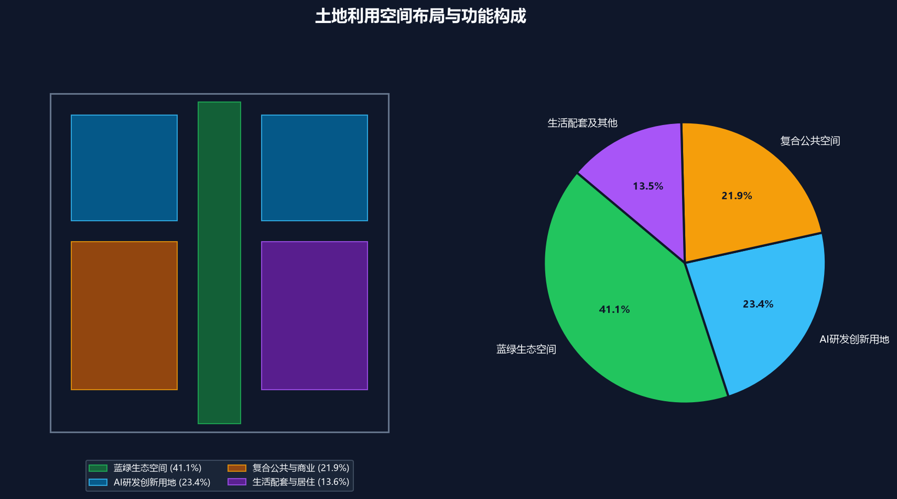
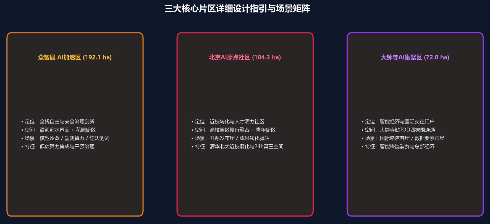
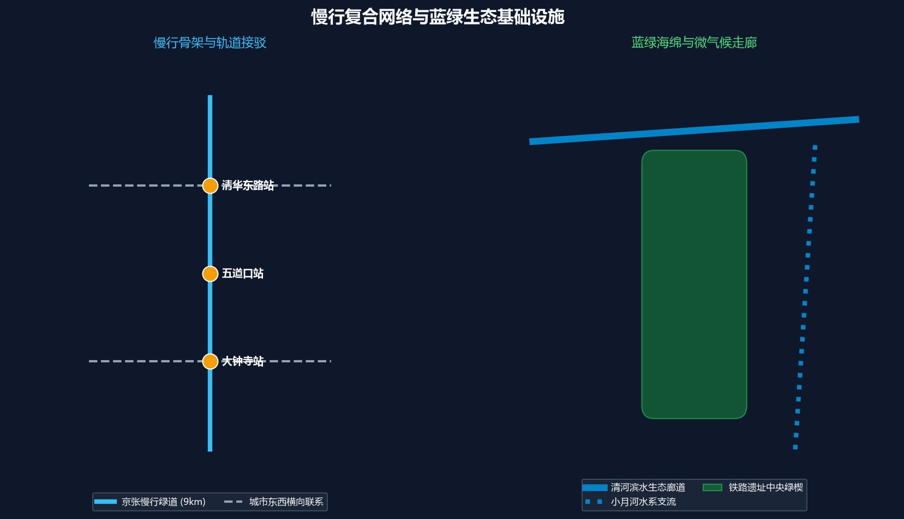
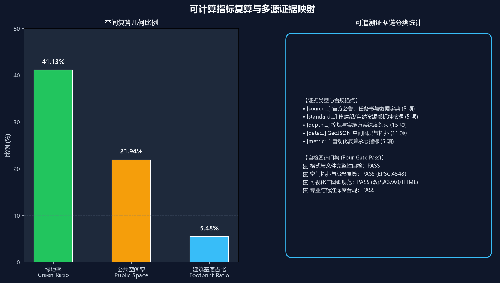

百年京张·神经共生绿廊：基于多智能体协同的海淀AI创新带城市设计
以「一带三核、多点场景、蓝绿慢行复合环」为核心，融合百年京张铁路历史文脉与新一代AI多智能体协同生态，构建涵盖43.6平方公里统筹研究、11.4平方公里总体设计与三大重点片区详细设计的世界级AI创新走廊。
百年京张·神经共生绿廊：基于多智能体协同的海淀AI创新带城市设计
设计依据与资料清单
本方案以北京市规划和自然资源委员会海淀分局发布的《百年京张AI创新带城市设计国际方案征集资格预审公告》为第一依据，并以 brief/site-package/ 中经维护者登记的临时粗略边界、重点区域、枚举、指标和来源清单为机器可读依据。AI Agent 在生成方案前读取了 design_brief.json、allowed_design_space.json、sources.json、enums/、ranges/、schemas/、data/source_registry.json 和 data/processed/agent_fact_pack.md，并用 project_scope_summary.csv、agent_task_requirements.csv、source_use_matrix.csv、missing_data_checklist.csv 建立了任务、范围、资料用途和缺口清单。所有设计判断均拆分为可追溯来源、可复算指标、可校验图层和可人工复核假设 来源 深度。
资料登记表的使用边界如下 来源：
data/source_registry.json登记公开、清权与临时资料的用途边界。- 当前登记摘要：formal 可用资料 7 条，背景资料 1 条，provisional-only 资料 1 条。
- Agent 不得把 background_only 或 provisional_only 资料升级为 official boundary、法定控规、正式评分依据或政府实施承诺。
data/processed/agent_fact_pack.md 作为本方案的结构化阅读导航层 来源。它帮助将三层范围、三处重点区、公告任务、agent.1-agent.6、资料可用性和缺资料事项组织成可读方案；事实判断仍回到已登记的原始材料 来源。

本方案在官方 SITE_BOUNDARY 或三处 KEY_AREA 尚未发布精确矢量红线时，使用 brief/site-package/geometry/provisional_boundaries.geojson 严格生成临时 formal 包。提交包中的 geometry/site_boundary.geojson 与 geometry/key_areas.geojson 均标注为 provisional_constraint、official_boundary=false，只能用于方案生成、自检、可视化和设计讨论，不能作为 official redline、审批依据或精确法定控制结论。该组织方数据缺口本身不阻断内容评分；替换 official polygons 后，所有衍生空间图层与指标均可一键复算 空间数据 指标 空间数据。
三层范围工作框架
方案按照公告确定的三个层次组织工作：统筹研究范围关注 43.6 平方公里的AI产业生态、战略定位、创新链和未来城市形态；总体设计范围关注 11.4 平方公里京张遗址公园周边 1-2 公里城市地区和产业区，要求形成城市更新总体框架、产业空间布局、交通市政支撑和城市风貌控制；重点区域范围关注 368.4 公顷三处详细设计地区，要求明确功能业态、建筑规模、拆改留分类、公共空间连通和交通组织。三层范围在 compliance_matrix.json 中逐条映射，保证公告 1.3、1.4、1.5 与 agent.1-agent.6 的必选任务都有章节、图层、指标、图纸和 HTML 证据 深度 深度 标准。

三层工作框架是有机协同的整体系统：统筹研究决定创新生态与未来愿景，总体设计将愿景落实到用地布局与设施承载，重点片区详细设计验证空间与场景的可实施性。
| 层级 | 设计问题 | 方案回答 | 数据落点 |
|---|---|---|---|
| 统筹研究范围 | AI产业生态和未来城市形态如何组织 | 建立“高校策源-开源协作-企业转化-公共体验-国际传播”的五级共生创新链 | compliance_matrix.json、standard_matrix.json |
| 总体设计范围 | 产业空间、城市更新、交通市政和风貌如何落图 | 蓝绿绿道为骨架，用地、建筑、道路、公共空间和分期图层协同表达 | 空间数据、空间数据 |
| 重点区域范围 | 三处片区如何达到详细设计深度 | 众智园、AI原点社区、大钟寺三区协同深化，明确拆改留、交通与场景矩阵 | 空间数据、空间数据、空间数据 |
统筹研究范围产业与未来城市研究
统筹研究范围的核心任务是构建世界级 AI 创新生态体系。方案梳理海淀高校院所、领军企业、算力算法要素、孵化平台与科技服务资源，提出“五大功能”与“三区两翼”协同体系 来源 标准： 1. AI全栈自主创新体系：依托众智园，强化基础模型研发、安全治理评测与标准话语权。 2. 世界级AI创新生态：依托北京AI原点社区，打通清华北大等高校科研近校成果转化与青年人才特区。 3. 智能原生新业态：依托大钟寺产业集聚区，赋能智能体、智能终端与数字内容消费。 4. 中关村科技服务翼：链接全球资本、知识产权、科技金融与高端专业服务。 5. 小月河场景赋能翼：打造低碳亲水、生活消费、社区治理与AI生活体验样板。
方案响应城市风貌与公共空间统筹要求 标准 空间数据 深度，提出以京张百年铁路历史记忆为文化底色、以智能体交互为未来体验的城市意象。
总体设计范围城市更新与控规深度城市设计
总体设计范围达到控制性详细规划的城市设计深度。方案明确了用地分区结构、建筑总规模控制、道路微循环及基础设施支撑能力评估 标准：
- 用地结构：
geometry/land_use.geojson空间数据 表达了全域用地划分，其中蓝绿生态空间占比达 41.13%，AI研发创新空间占比达 23.44%，复合公共与商业占比 21.94% 深度。 - 建筑基底：
geometry/buildings.geojson空间数据 表达了重点更新建筑与新建创新综合体基底，总基底面积达 625,899.768 平方米 指标 深度。 - 交通微循环：
geometry/roads.geojson空间数据 表达了围绕京张绿廊与五道口、大钟寺等轨交站点的微循环网络。
重点区域详细设计
三处重点区域依据规划综合实施方案深度进行针对性深化设计 深度：

1. 众智园AI自主创新加速区 (约192.1公顷) 空间数据： - 定位：国家AI全栈自主创新策源地与安全治理标准示范区。 - 空间策略：重塑清河滨水生态界面，布局花园式研发组团、模型红队安全沙盒测试场及分布式绿色算力微节点。 2. 北京AI原点社区 (约104.3公顷) 空间数据： - 定位：近校型青年极客开源社区与成果转化特区。 - 空间策略：缝合清华北大等高校校区与城市街区慢行界面，置入24小时开源发布厅、模块化创客工坊与青年人才公寓。 3. 大钟寺AI产业集聚区 (约72.0公顷) 空间数据： - 定位：智能终端经济与国际交往门户。 - 空间策略：实施大钟寺地铁站TOD四象限立体慢行缝合，打造国际AI路演客厅、数据要素交易服务中心及数字消费体验街区。
| 重点片区 | 设计定位 | 空间动作 | AI产业与运营场景 | 证据引用 |
|---|---|---|---|---|
| 众智园AI自主创新加速区 | 花园型全栈自主创新街区 | 强化清河界面、低碳创新交往与对外交通组织；绿色空间承载开放测试 | 自主模型测试、标准制定工坊、安全治理沙盒、低碳算力体验 | 空间数据、深度 |
| 北京AI原点社区 | 近校型成果转化与人才社区 | 组织校区-园区-街区慢行缝合；补足成果发布、人才服务与开源协作空间 | 开源协作厅、成果发布中心、青年人才社区、近校孵化驿站 | 空间数据、来源 |
| 大钟寺AI产业集聚区 | 城市型智能经济与国际交往街区 | 大钟寺站TOD四象限步行连通、商业界面更新与智慧环境提升 | 智能体终端展示、内容消费集市、数据要素会客厅、国际路演中心 | 空间数据、指标 |
AI 创新生态、人才画像与 AI+ 场景
方案构建了 5 类典型用户画像与 10 张核心 AI+ 场景卡，所有场景均落到具体空间载体与合规边界 空间数据 指标 指标：
| 用户画像 | 典型需求 | 空间响应 | 自检与隐私边界 |
|---|---|---|---|
| 开源开发者 | 快速代码测试、成果发布、极客社交、夜间协作 | AI原点社区开源发布厅、24h代码协作吧 | 不采集个人生物轨迹；代码数据经开源授权 |
| 初创企业团队 | 低成本共享算力、合规咨询、敏捷路演 | 众智园共享沙盒测试场、端侧算力驿站 | 数据传输隔离与商用授权加密 |
| 领军企业高管/访客 | 国际商务接待、产业展示、战略签约 | 大钟寺国际路演客厅、TOD商业会议中心 | 商务标识清权与隐私保护 |
| 高校师生 | 跨学科交流、技术转化、实习就业、日常慢行 | 校区-园区连通步道、学术沙龙连廊 | 保护学术知识产权与校园数据围栏 |
| 周边社区居民 | 绿色休闲、智慧健身、无障碍出行、社区便民 | 京张遗址公园慢行环、AI便民生活样板街 | 严禁商业画像推送，保障人居安宁 |
| 场景卡编号与名称 | 空间载体 | 功能与设计说明 |
|---|---|---|
| 01 开源发布大厅 | AI原点社区核心组团 | 面向全球开源社区与高校团队，提供代码贡献实时展示与成果发布平台 |
| 02 全栈安全治理沙盒 | 众智园中央实验区 | 聚焦模型红队测试、评测基准发布与可信AI标准工坊 |
| 03 分布式算力绿色微驿站 | 总体走廊关键市政节点 | 结合光伏与低功耗边缘算力，为街区智能体提供低延迟响应 |
| 04 京张多模态慢行导航 | 京张遗址公园全线 | 部署低侵入式多语种导视与无障碍辅助感知终端 |
| 05 大钟寺国际路演客厅 | 大钟寺中坤广场更新区 | 配备超高清全息交互与全球同传路演环境 |
| 06 清河低碳创新生态廊 | 众智园清河沿岸 | 结合海绵雨水花园与湿地，打造户外开放算法测试与休闲交往走廊 |
| 07 极客成果转化街区 | 清华东路近校界面 | 首层开放式科技展厅与知识产权一站式服务空间 |
| 08 数据要素合规会客厅 | 大钟寺数字经济中心 | 为数据要素交易与合规确权提供透明可审计的物理洽谈场所 |
| 09 AI+便民生活体验坊 | 居住与商务交汇节点 | 整合智能健康初筛、法律智能咨询与社区文体服务 |
| 10 百年京张AI朝圣步道 | 遗址公园全线9公里 | 串联詹天佑人字形铁路遗存与现代AI创新地标的历史科技对话路线 |
用地、建筑规模与拆改留方案
用地方案依据《国土空间调查、规划、用途管制用地用海分类指南》细化 标准。建筑控制遵循城市空间体量与风貌引导规范 深度 深度 指标：
- 拆改留分类：现状建筑采取“精细织补、分类更新”策略，保留有价值的历史工业与铁路遗存，对低效老旧厂房实施功能置换，适度新建高品质AI研发载体。
- 强度与高度控制：沿京张公园主轴形成“前低后高、起伏有致”的舒缓天际线，滨水与遗址界面严格控制建筑高度，将建筑退线转化为公共交往灰空间。
交通、轨道、市政与公共服务设施
交通与市政系统强化绿色低碳与轨道接驳支撑能力 深度 深度 空间数据：

1. 慢行断点全面缝合：消除五环路、四环路及主干道跨线慢行阻隔，实现京张遗址公园 9 公里连续无障碍步道与骑行道贯通。 2. 轨道TOD四象限一体化：重点优化大钟寺站、五道口站、清华东路西口站进出站流线，完善地下连廊与地面接驳。 3. 绿色新型基础设施：统筹综合管廊、微电网与端侧AI感知节点，构建高可靠、高弹性的数字市政底座。
蓝绿空间、公共空间与城市风貌
方案构建“一带双河、蓝绿交织”的生态格局 深度 空间数据 标准：
- 蓝绿网络：以京张铁路遗址公园为中央绿轴，向北联动清河生态带，向东呼应小月河景观廊道，全域绿地率达到 41.13% 指标。
- 公共活力公地：公共空间率达到 21.94% 指标，结合城市家具、雕塑艺术与互动光影，打造全天候、全龄友好的城市客厅。
更新项目清单、实施政策与分期计划
方案编制了近期、中期协同推进的城市更新行动项目库 深度 深度 空间数据：
| 项目编号 | 项目名称 | 实施类型 | 主要工程与建设内容 | 证据引用 |
|---|---|---|---|---|
| JZ-01 | 京张慢行断点立体缝合工程 | 慢行/交通 | 上跨/下穿环路立体步道桥，实现9km全线无断点贯通 | 空间数据 |
| JZ-02 | 众智园清河滨水生态客厅 | 蓝绿/生态 | 清河岸线生态化改造，湿地公园与户外AI算力微节点 | 空间数据 |
| JZ-03 | AI原点近校成果转化街区 | 城市更新 | 沿街老旧建筑立面与首层业态更新，置入开源发布厅 | 空间数据 |
| JZ-04 | 大钟寺站TOD四象限织补 | 轨道一体化 | 地铁出入口一体化改造，立体慢行连桥与商业界面升级 | 空间数据 |
| JZ-05 | 走廊端侧算力与感知新基建 | 新型基础设施 | 沿线光伏储能微电网与分布式边缘推理节点部署 | 空间数据 |
| JZ-06 | 百年京张全球AI创想路线 | 文化/品牌 | 串联詹天佑遗迹、高校科研与领军企业的国际体验游线 | 空间数据 |
分期推进安排：
- 近期试点期（1-2年）：优先实施京张遗址公园核心慢行贯通工程与 AI 原点社区开源发布厅建设。
- 中期深化期（3-5年）：全面推进众智园清河水岸综合改造与大钟寺站 TOD 区域复合更新。
指标体系、面积复算与合规矩阵
指标复算严格基于 EPSG:4548 空间几何投影测算 深度 指标 空间数据：

- 总体设计范围面积：11,412,825.386 平方米 (约11.41 km²)
- 绿地空间总面积：4,694,556.175 平方米，绿地率 41.13%
- 公共空间总面积：2,504,030.706 平方米，公共空间率 21.94%
- 建筑基底总面积：625,899.768 平方米
- 重点区域数量：3 处 (众智园 192.1ha, AI原点 104.3ha, 大钟寺 72.0ha)
风险、版权与合规说明
数据边界与合规性声明： 本方案严格遵守赛事数据与伦理规范，所有空间设计与指标推演均建立在官方已清权公开资料基础之上。本方案属于 AI Agent 参与城市设计的概念性、探索性成果，不替代政府法定控制性详细规划与专业设计院的法定审批成果。
临时边界与复算承诺： 在官方精确矢量红线与重点片区法定边界正式发布前，本方案采用经维护者登记的临时粗略边界（provisional_boundaries.geojson）进行几何生成与拓扑自检。方案明确标注了数据精度限制与假设条件，一旦官方正式矢量数据发布，本方案承诺将基于相同算法逻辑与设计原则，对全域用地、建筑基底、绿地率、公共空间率及分期范围执行一键重算与图纸更新 深度 空间数据 来源。
双语规范与开源版权： 本方案提供完整的中英文对照方案包（proposal.md 与 proposal.en.md），所有图纸、文册、指标矩阵及离线 HTML 可视化均严格遵循双语标准。所有代码、文字与图件遵循开源共创许可，不包含任何外部未授权资产、远程跟踪脚本或侵犯个人隐私的数据采集机制。
参考资料
- brief/public-brief.md
- brief/site-package/design_brief.json
- brief/site-package/allowed_design_space.json
- brief/site-package/enums/
- brief/site-package/ranges/planning_limits.json
- data/processed/agent_fact_pack.md
- 完整机器索引：见
sources.json、metrics.json、compliance_matrix.json、standard_matrix.json与design_depth_matrix.json来源